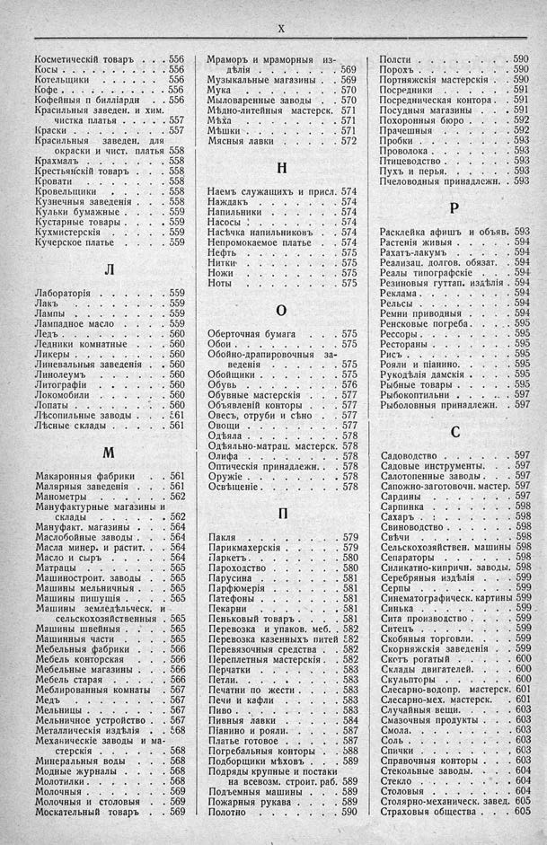

Лист источника 40
Скан

Распознанный текст
X
Косметическій товаръ . . . 556
Косы . . . . . . . . . . . 556
Котельщики . . . . . . . 556
Кофе . . . . . . . . . . . 556
Кофейныя и билліардн . . 556
Красильныя заведен. и хим.
чистка платья . . . . . 557
Краски . . . . . . . . . . 557
Красильныя заведен. для
окраски и чист. платья 558
Крахмалъ . . . . . . . . . 558
Крестьянскій товаръ . . . 558
Кровати . . . . . . . . . 558
Кровельщики . . . . . . . 558
Кузнечныя заведенія . . . 558
Кульки бумажные . . . . . 559
Кустарные товары . . . . . 559
Кухмистерскія . . . . . . 559
Кучерское платье . . . . . 559
Л
Лабораторія . . . . . . . 559
Лакъ . . . . . . . . . . . 559
Лампы . . . . . . . . . . 559
Лампадное масло . . . . . 559
Ледъ . . . . . . . . . . . 560
Ледники комнатные . . . . 560
Ликеры . . . . . . . . . . 560
Линевальныя заведенія . . 560
Линолеумъ . . . . . . . . 560
Литографіи . . . . . . . . 560
Локомобили . . . . . . . . 560
Лопаты . . . . . . . . . . 560
Лѣсопильные заводы . . . 561
Лѣсные склады . . . . . . 561
М
Макаронныя фабрики . . . 561
Малярныя заведенія . . . . 561
Манометры . . . . . . . . 562
Мануфактурные магазины и
склады . . . . . . . . 562
Мануфакт. магазины . . . 564
Маслобойные заводы . . . 564
Масла минер. и растит. . . 564
Масло и сыръ . . . . . . . 564
Матрацы . . . . . . . . . 565
Машиностроит. заводы . . 565
Машины мельничныя . . . 565
Машины пишущія . . . . . 565
Машины земледѣльческ. и
сельскохозяйственныя . 565
Машины швейныя . . . . 565
Машинныя части . . . . . 565
Мебельныя фабрики . . . 566
Мебель конторская . . . . 566
Мебельные магазины . . . 566
Мебель старая . . . . . . 566
Меблированныя комнаты . 567
Медъ . . . . . . . . . . . 567
Мельницы . . . . . . . . . 567
Мельничное устройство . . 567
Металлическія издѣлія . . 568
Механическіе заводы и ма-
стерскія . . . . . . . . 568
Минеральныя воды . . . . 568
Модные журналы . . . . . 568
Молотилки . . . . . . . . . 568
Молочныя . . . . . . . . . 569
Молочныя и столовыя . . 569
Москательный товаръ . . . 569
Мраморъ и мраморныя из-
дѣлія . . . . . . . . . 569
Музыкальные магазины . . 569
Мука . . . . . . . . . . . 570
Мыловаренные заводы . . 570
Мѣдно-литейныя мастерск. 571
Мѣха . . . . . . . . . . . 571
Мѣшки . . . . . . . . . . 571
Мясныя лавки . . . . . . 572
Н
Наемъ служащихъ и присл. 574
Наждакъ . . . . . . . . . 574
Напильники . . . . . . . 574
Насосы . . . . . . . . . . 574
Насѣчка напильниковъ . . 574
Непромокаемое платье . . 574
Нефть . . . . . . . . . . 575
Нитки . . . . . . . . . . . 575
Ножи . . . . . . . . . . . 575
Ноты . . . . . . . . . . . 575
О
Оберточная бумага . . . . 575
Обои . . . . . . . . . . . . 575
Обойно-драпировочныя за-
веденія . . . . . . . . 575
Обойщики . . . . . . . . 575
Обувь . . . . . . . . . . . 576
Обувные мастерскія . . . 577
Объявленій конторы . . . 577
Овесъ, отруби и сѣно . . 577
Овощи . . . . . . . . . . 577
Одѣяла . . . . . . . . . . 578
Одѣяльно-матрац. мастерск. 578
Олифа . . . . . . . . . . . 578
Оптическія принадлежн. . 578
Оружіе . . . . . . . . . . 578
Освѣщеніе . . . . . . . . 578
П
Пакля . . . . . . . . . . . 579
Парикмахерскія . . . . . 579
Паркетъ . . . . . . . . . . 580
Пароходство . . . . . . . 580
Парусина . . . . . . . . . 581
Парфюмерія . . . . . . . 581
Патефоны . . . . . . . . . 581
Пекарни . . . . . . . . . 581
Пеньковый товаръ . . . . 581
Перевозка и упаков. меб. . 582
Перевозка казенныхъ питей 582
Перевязочныя средства . . 582
Переплетныя мастерскія . . 582
Перчатки . . . . . . . . . 583
Петли . . . . . . . . . . . 583
Печатни по жести . . . . 583
Печи и кафли . . . . . . 583
Пиво . . . . . . . . . . . 583
Пивныя лавки . . . . . . 584
Піанино и рояли . . . . . 587
Платье готовое . . . . . . 587
Погребальныя конторы . . 588
Подборщики мѣховъ . . . 589
Подряды крупные и постаки
на всевозм. строит. раб. 589
Подъемныя машины . . . 589
Пожарныя рукава . . . . 589
Полотно . . . . . . . . . 590
Полсти . . . . . . . . . . 590
Порохъ . . . . . . . . . . 590
Портняжскія мастерскія . . 590
Посредники . . . . . . . 591
Посредническая контора . . 591
Посудныя магазины . . . 591
Похоронныя бюро . . . . 592
Прачешныя . . . . . . . . 592
Пробки . . . . . . . . . . 593
Проволока . . . . . . . . 593
Птицеводство . . . . . . . 593
Пухъ и перья . . . . . . . 593
Пчеловодныя принадлежн. . 593
Р
Расклейка афишъ и объяв. 593
Растенія живыя . . . . . . 594
Рахатъ-лакумъ . . . . . . 594
Реализац. долгов. обязат. . 594
Реалы типографскіе . . . 594
Резиновыя гуттап. издѣлія . 594
Реклама . . . . . . . . . . 594
Рельсы . . . . . . . . . . 594
Ремни приводныя . . . . 594
Ренсковые погреба . . . . 595
Рессоры . . . . . . . . . . 595
Рестораны . . . . . . . . 595
Рисъ . . . . . . . . . . . 595
Рояли и піанино . . . . . 595
Рукодѣлія дамскія . . . . 595
Рыбные товары . . . . . . 595
Рыбокоптильни . . . . . 597
Рыболовныя принадлежн. . 597
С
Садоводство . . . . . . . 597
Садовые инструменты . . . 597
Салотопенные заводы . . . 597
Сапожно-заготовочн. мастер. 597
Сардины . . . . . . . . . 597
Сарпинка . . . . . . . . . 598
Сахаръ . : . . . . . . . . 598
Свиноводство . . . . . . . 598
Свѣчи . . . . . . . . . . 598
Сельскохозяйствен. машины 598
Сепараторы . . . . . . . . 598
Силикатно-кипричн. заводы . 598
Серебряныя издѣлія . . . 599
Серпы . . . . . . . . . . 599
Синематографическ. картины 599
Синька . . . . . . . . . . 599
Сита производство . . . . 599
Ситецъ . . . . . . . . . . 599
Скобяныя торговли . . . . 599
Скорняжскія заведенія . . 599
Скстъ рогатый . . . . . . 600
Склады двигателей . . . . 600
Скульпторы . . . . . . . 600
Слесарно-водопр. мастерск. 601
Слесарно-мех. мастерск. . 601
Случайныя вещи . . . . . 603
Смазочныя продукты . . . 603
Смола . . . . . . . . . . . 603
Соль . . . . . . . . . . . 603
Спички . . . . . . . . . . 603
Справочныя конторы . . . 603
Стекольные заводы . . . . 604
Стекло . . . . . . . . . . 604
Столовыя . . . . . . . . 604
Столярно-механическ. завед. 605
Страховыя общества . . . 605